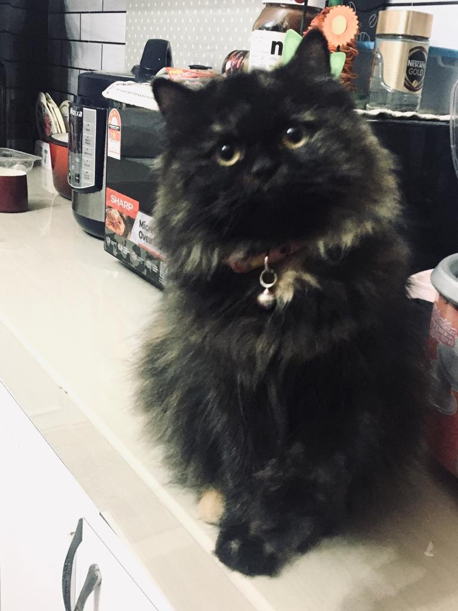
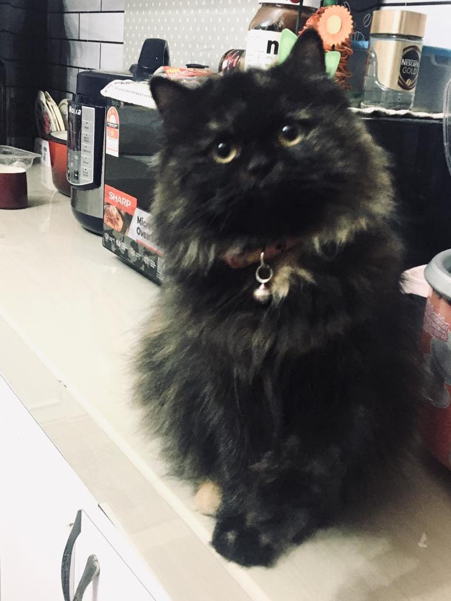

🌸 Hi! My name is Nur Arieysha binti Mustapa 🌸
I'm a Library Management student at UiTM Kedah, originally from Sungai Udang, Melaka. My passion for organizing information and making knowledge accessible makes this field perfect for me!
When I'm not studying, you'll find me helping my family make and sell traditional Malaysian aiskrim during breaks. I also gained hands-on customer service experience working at KFC after my second semester.
Beyond academics, I love expressing my creativity through baking cakes and makeup artistry. My taste buds crave spicy ayam gepuk, and I'll never say no to Llao Llao frozen yogurt! I'm known for my positive attitude, love for teamwork, and making meaningful connections with people.
Life has taught me valuable lessons (including relationship challenges) that helped shape me into a responsible, resilient person who's always eager to learn and grow.
🍓 My Favorite Pictures 🍓
🌷 Hobbies 🌷
🍄 Baking 🍄: I have a deep passion for baking, especially cookies and cakes. There's something so comforting and fulfilling about being in the kitchen, surrounded by the aroma of fresh bakes. I love experimenting with new recipes, perfecting each batch with care and patience, and creating delicious treats that bring joy to others — especially when I see their happy reactions.
🍄 Makeup & Styling 🍄: I love doing makeup and trying out different looks for every occasion. Dressing up and putting together cute outfits helps me express my mood and style. In my free time, I enjoy watching fashion videos and scrolling through aesthetic content.
🍄 Driving 🍄: I love driving, especially through scenic routes. It gives me a sense of freedom and peace — a moment to clear my mind and just enjoy the journey.
🌺 Contact 🌺
You can contact me via Gmail at arieyshaarieysha@gmail.com or follow me on Instagram: @oshhhhhh._.
🍒 My Lovely Cat 🍒
I really love cats, and they have always meant so much to me. I've had many cats in my life, including Bella, Jenny, Chemok, Chemek, and many others. Each of them had their own personality, and I loved them deeply.
Sadly, most of them have passed away, and it still makes me very sad. I remember taking care of them when they were sick, bringing them to the vet, giving them medicine, and staying by their side when they were weak.
I even got sick myself because I was so focused on looking after them, but I didn't mind, because they were like family to me. Even though they are no longer with me, I will always treasure the memories we shared.
 

💞 My University Friends 💞
I'm so lucky to have friends like Nik, Mell, Izzah, Nurin, Wani, and Mell in university.
🎀 Nik 🎀
Nik is super kind, always pays for my food first and helps me out a lot. She's always there to hang out with me, speaks softly, but when she's mad, she definitely knows how to widen her eyes. I really appreciate everything she does for me.
🎀 Izzah 🎀
Izzah is another gem, we've been friends since semester 1 and used to go to the food court together. She's always treating me, lending me her stuff, and I'll never forget how kind her family is. They even invited me to their home and Izzah took me to Penang Central once, which was so thoughtful.
🎀 Nurin 🎀
Nurin was my roommate, and we've been friends since the start too. She's the queen of dry jokes that always make me laugh, plus she's paid for my food before, and we often swap things with each other. Every time we're together, there's always something funny happening.
🎀 Wani and Mell 🎀
Wani and Mell are just as amazing, always there for a good laugh, and we have such a good time whenever we hang out. Honestly, I'm lucky to have all these wonderful people in my life.
🌼 My Family 🌼
I'm really lucky to have such an amazing family who always supports me. My parents are my biggest cheerleaders, always encouraging me to do my best, and my siblings never fail to make me laugh even on bad days. I'm truly grateful to have them in my life..
💼 Ayah 💼
My dad, Ayah, has always been there for me. He used to tie my hair every morning before school, making sure I was ready for the day. And when no one else could pick me up, he'd drive the oil truck to get me. One of the moments I'll never forget is when the canteen worker didn't give me my change, and Ayah was there to comfort me. Mama, on the other hand, has always been so supportive. I remember on the first day of UPSR, I forgot to bring my IC, and Mama, even though she was just getting off work, w ent all the way home to get it and brought it to me at school.🧕 Mama 🧕
Mama has always been such a great listener, like a friend, and as I've grown up, she's become someone I can talk to about anything. A yah has always protected and supported me through everything.
🧕 Misha 🧕
My older sister, Misha, has kept many of my biggest secrets. She's always been there to support me, and she often gives me money when I need it. She's someone I can count on no matter what.
🤠 Apis 🤠
Then there's my younger brother, Apis. He doesn't always help out, but when he does, it really makes a difference. We also spend a lot of time talking and just enjoying each other's company. I'm really grateful for every one of them because no matter what happens, my family is always there for me.
💯 Education 💯
| Year | Place | Level | Field of Study |
|---|---|---|---|
| 2012–2017 | SJKC Poh Lan | Primary | – |
| 2018–2023 | SMK Sungai Udang | Secondary | Sport Science |
| 2023–2026 | Universiti Teknologi MARA (UiTM), Kedah Branch | Diploma | Library Informatics |